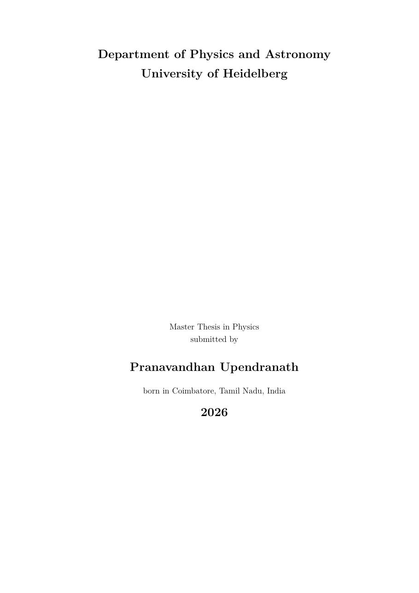

Gas density in the orbital plane as a 2 M☉ star spirals into a 10 M☉ star. Time in hours is shown in the corner.
Pranavandhan Upendranath Master thesis in Physics, Heidelberg University, 2026
We investigate the evolution of one-dimensional stellar merger products formed in massive binary systems, focusing on the M1,i = 10.16 M☉ slice of the binary grid of Henneco et al. (2024b). We identify 100 Case A, Case AB, and Case Be systems that reach contact and are expected to merge. The properties of the merger progenitors at merger differ substantially from those at the onset of mass transfer, both in mass and evolutionary state.
We construct the merger products using two one-dimensional prescriptions, entropy sorting and PyMMAMS. These prescriptions differ qualitatively for post-main-sequence + main-sequence mergers. A three-dimensional smoothed-particle hydrodynamics calculation of one such configuration supports the entropy-sorting approach. We then evolve the merger products with MESA until central helium exhaustion.
We find two merger channels that populate the blue and yellow supergiant region in the Hertzsprung–Russell diagram (HRD) on a nuclear, rather than thermal, timescale. These two channels are largely indistinguishable by their position in the HRD alone. In most cases, the merger alters the observable appearance of the star while leaving the carbon–oxygen core mass close to that of a single star of the same post-merger mass. Both channels plausibly contribute to the observed blue-supergiant population.
Wir untersuchen die Entwicklung eindimensionaler Modelle von Sternverschmelzungsprodukten, die in massereichen Doppelsternsystemen entstehen. Dabei konzentrieren wir uns auf den Teil des Doppelsternrasters von Henneco et al. (2024b) mit einer anfänglichen Primärmasse von M1,i = 10.16 M☉. Wir identifizieren 100 Systeme der Fälle A, AB und Be, die in Kontakt kommen und voraussichtlich verschmelzen. Beide Kanäle stellen plausible Beiträge zur beobachteten Population blauer Überriesen dar.
Helium ignites on the hot side of the HRD, at log10(Teff/K) > 3.7, and the star stays there.
The star moves to the cool side before helium ignition, then later executes a blue loop.
Both channels fill the blue and yellow supergiant region. Position in the HRD alone does not tell them apart.
The video above comes from a smoothed-particle hydrodynamics run with Phantom. A 10 M☉ Hertzsprung-gap primary and a 2 M☉ main-sequence secondary spiral together, and the colour shows the logarithm of gas density in g/cm³.
This is one configuration of the post-main-sequence + main-sequence type. Its outcome supports the entropy-sorting prescription, which is the comparison made in the thesis.

@mastersthesis{Upendranath2026,
author = {Upendranath, Pranavandhan},
title = {Evolution of One-Dimensional Stellar Merger Products},
school = {Heidelberg University},
year = {2026},
type = {Master thesis}
}